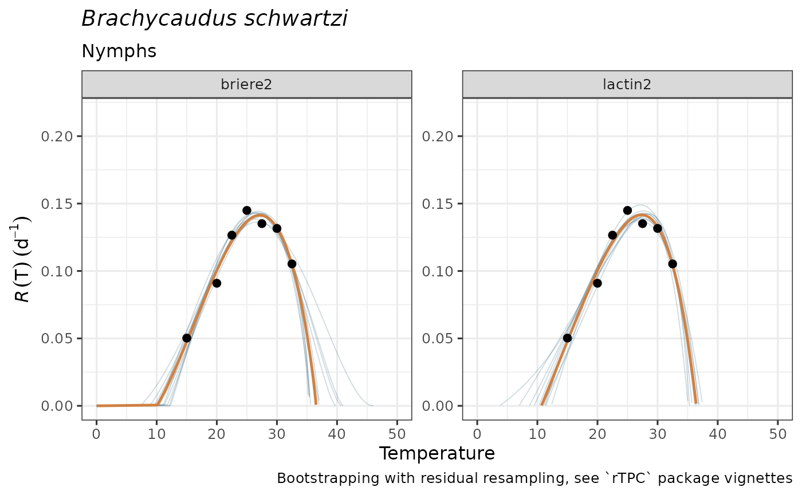

Simulate TPCs with bootstrap to propagate uncertainty
Source:vignettes/articles/tpcs-simulate-bootstrap.Rmd
tpcs-simulate-bootstrap.RmdSimulate -thermal performance curves using bootstrap with residual resampling
Why propagating uncertainty?
Forecasting necessarily incorporates uncertainties in how much we know about the knowledge of the target system (i.e., model structure, parameter uncertainty, response or predictor variable errors, etc) that adds together with uncertainty in how to communicate findings and an unavoidable randomness within natural systems (Simmonds et al. 2022). Specifically, propagating parameter uncertainty for estimation of performance and fitness through thermal performance curves and translate them into geographical predictions result critical to prevent biased forecasts (Woods et al. 2018).
At least three different uncertainty sources of the models should be addressed in forecasts:
-
Parameter uncertainty: the accuracy of estimated
parameters of the models may affect the confidence of the predictions.
For example in the TPCs model
fitting article, the
briere2model yields . Let’s imagine a forecaster aiming to identify “safe” regions where the pest may not be established due to extremely high maximum temperatures (e.g., ). It’s possible that all the forecasting regions have monthly maximum temperatures of about 34ºC, which lie below the estimate of 36.5 ºC, leading to identify no risk for the assessment. However, if we incorporate how the uncertainty of each parameter contributes to the variability of the predicted TPC with simulated TPC ribbons in the plot –see e.g., below withplot_uncertainties(), there are possible scenarios at which several TPC-calculated ’s lie below 34ºC, yielding a not-negligible risk likelihood. - Predictor uncertainty: incorporating the variability of the predictor –in the above case, monthly maximum temperatures– will also yield a probability distribution of forecast outcomes (let’s say ). This would result in some scenarios with maximum temperatures above estimate of ºC and some others where they have not.
- Source data uncertainty: additionally, TPCs are usually fitted to summarized data from experiments in laboratory conditions. These measures incorporate both both measurement error (at the individual level) and uncertainty measures summarizing the variability of rate estimates at the population level.
For now, mappestRisk enables to explicitly account for
parameter uncertainty by simulating
TPCs using bootstrapping techniques with residual resampling, as
suggested and implemented by rTPC package (see this
vignette/article (Padfield, O’Sullivan, and
Windram 2025)) as described in the section below. Measurement
uncertainty of source data might be further incorporated in future
enhancement updates of the package through a weights
argument of fit_devmodels() and
predict_curves() (Padfield,
O’Sullivan, and Pawar 2021) since they are based on the
rTPC - nls.multstart framework that has
recently incorporated an article
on how to simulate curves by weighted bootstrapping. Finally, a
discussion on how to deal with predictor uncertainty of the forecasts
and how to overcome communication uncertainty is given in the generate-risk-maps vignette
article.
Simulate bootstrapped TPCs with predict_curves()
As mentioned above, mappestRisk includes two functions
that automate the workflow suggested by rTPC package to
simulate curves for propagating parameter uncertainty. We implemented
the residual resampling method following rTPC
vignette suggestions, but with a raw resampling code workflow rather
than using car::Boot() function for simplicity. We opted
for the residual resampling rather than the case resampling
bootstrapping method as the predictor data are controlled by the
experimental researchers and there are usually few data points per
curve, with low representation of the hot decay TPC region in the source
data that would make many case resampling iterations difficult for
refitting new TPC models. For further insights on the methodology,
please refer to the the
original rTPC vignette. Further updates of the package
may incorporate variance modelling for heteroscedastic residuals, as
well as an argument to choice between residual
resampling and case resampling1.
The predict_curves() function incorporates the
temperature and development rate data arguments, a
fitted_parameters argument that requires as input the table
obtained from fit_devmodels(), a
model_name_2boot argument to choose which TPC model(s) to
bootstrap along those available in fitted_parameters and
the number of bootstrap samples, or n_boots_samples. The
function implicitly extracts the residuals and the fitted values of the
estimated TPC from fit_devmodels(). Then, it resamples with
replacement these residuals. Next, the function automatically calculates
the new resampled observations for the iteration
(i.e.,
)
as follows:
where
represent the fitted values from the TPC model and
denotes the resampled residuals of that model. Note that
-th
iteration is given by n_boots_samples, or
.
This results in
resampled data sets. Each of them is next used for fitting a new
nonlinear model using fit_devmodels(); those that
adequately converged (a total
models) constitute newly bootstrapped nonlinear regression model.
Finally, the function calculates the predictions of these bootstrapped
models along temperature data –more specifically, 20ºC below and 15ºC
above the minimum and maximum temperature values, respectively, in
temp argument each 0.01ºC. This results in a total
simulated thermal performance curves that are used for propagating
parameter uncertainty for inference.
Here we have an example:
#fit previously:
data("aphid")
fitted_tpcs_aphid <- fit_devmodels(temp = aphid$temperature,
dev_rate = aphid$rate_value,
model_name = "all")
#> Warning in fit_devmodels(temp = aphid$temperature, dev_rate = aphid$rate_value,
#> : TPC model beta had one or more parameters with unexpectedly large standard
#> errors.
#> Warning in fit_devmodels(temp = aphid$temperature, dev_rate = aphid$rate_value,
#> : TPC model boatman had one or more parameters with unexpectedly large standard
#> errors.
#> Warning in fit_devmodels(temp = aphid$temperature, dev_rate = aphid$rate_value,
#> : TPC model briere1 had one or more parameters with unexpectedly large standard
#> errors.
#> Warning in fit_devmodels(temp = aphid$temperature, dev_rate = aphid$rate_value,
#> : TPC model joehnk had one or more parameters with unexpectedly large standard
#> errors.
#> Warning in fit_devmodels(temp = aphid$temperature, dev_rate = aphid$rate_value,
#> : TPC model kamykowski had one or more parameters with unexpectedly large
#> standard errors.
preds_boots_aphid <- predict_curves(temp = aphid$temperature,
dev_rate = aphid$rate_value,
fitted_parameters = fitted_tpcs_aphid,
model_name_2boot = c("briere2", "lactin2"),
propagate_uncertainty = TRUE,
n_boots_samples = 10)
#> Warning in predict_curves(temp = aphid$temperature, dev_rate =
#> aphid$rate_value, : 100 iterations might be desirable. Consider increasing
#> `n_boots_samples` if possible
#>
#> Note: the simulation of new bootstrapped curves takes some time. Await patiently or reduce your `n_boots_samples`
#>
#> Bootstrapping simulations completed for briere2
#>
#> Bootstrapping simulations completed for lactin2By default, the predict_curves function does propagate
uncertainty by simulating as many curves as asked through
n_boots_samples argument for each of the selected models
from model_name_2boot. If able to perform bootstrap, this
default configuration will output a tibble with simulated
TPCs for both plotting purposes and thermal traits calculation.
n_boots_samples is set up to 100 by default. We recommend
to avoid lower values that may inaccurately reflect uncertainty and to
think carefully when trying to perform bootstrap with larger samples,
since they may exponentially increase computational demands with little
benefit for the purposes addressed here. If
propagate_uncertainty is set to FALSE, the
function will output the same tibble with one single curve
(temperatures and predictions) coming from the estimated TPC (similar to
those plotted in plot_devmodels()for applying subsequent
steps in the mappestRisk suggested workflow.
The tibble output of predict_curves can be
easily visualized with plot_uncertainties(), where the
curve from the model estimate is plotted as a thicker, dark orange line
and the bootstrapped curves are depicted as slighter, dark blue lines
composing a sort of a ribbon for the central curve. If more than one
model has been successfully bootstrapped, predicted curves will be
plotted along different facets.
plot_uncertainties(bootstrap_tpcs = preds_boots_aphid,
temp = aphid$temperature,
dev_rate = aphid$rate_value,
species = "Brachycaudus schwartzi",
life_stage = "Nymphs")
#> Warning: Removed 500 rows containing missing values or values outside the scale range
#> (`geom_line()`).
#> Warning: Removed 50 rows containing missing values or values outside the scale range
#> (`geom_line()`).
These simulated TPCs may guide ecologically realistic model selection
and propagating parameter uncertainty for subsequent analyses. However,
as for plot_devmodels(), we discourage selecting among TPC
models solely based on statistical information, but rather on informed
ecological criteria.
Please, consider carefully whether your data is suitable for these procedures.